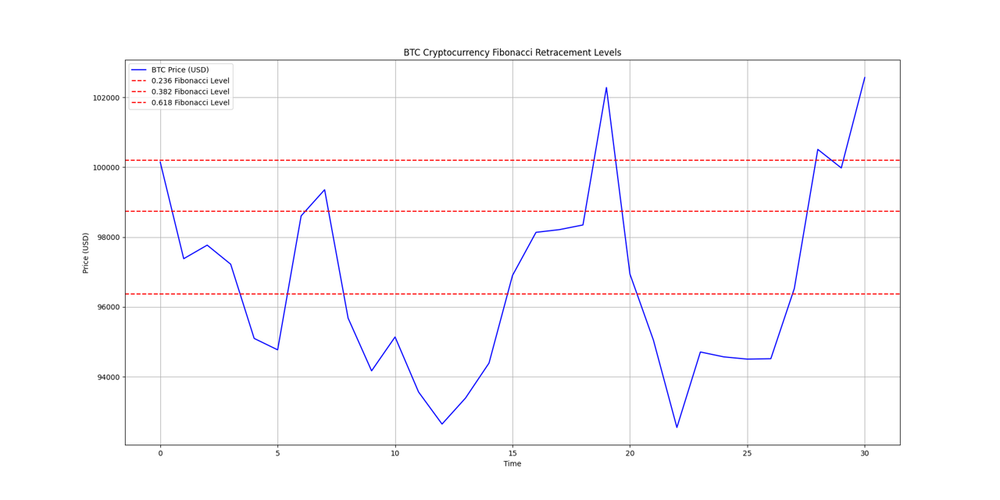

Fibonacci Retracement Analysis Example
Below is an example of our technical analysis services, demonstrating how Fibonacci retracement levels can help identify critical support and resistance zones for Bitcoin.
Figure: BTC Price Analysis with Fibonacci Retracement Levels
Key Insights
- Support Level: The 0.618 Fibonacci level ($96,000) has been tested multiple times, acting as a strong support zone.
- Buyer Activity: Rebounds from $96,000 indicate significant buying pressure, signaling potential entry opportunities.
- Resistance Zones: The 0.382 ($98,000) and 0.236 ($100,000) levels are critical resistance points for upward movement.
- Actionable Insights: Use $96,000 as an entry zone with tight stop-losses, targeting $98,000 or $100,000 for profits.
What This Means
This analysis demonstrates the power of Fibonacci retracement in predicting market behavior. By identifying key levels, traders can strategically plan their entries and exits, reducing risks while maximizing opportunities.